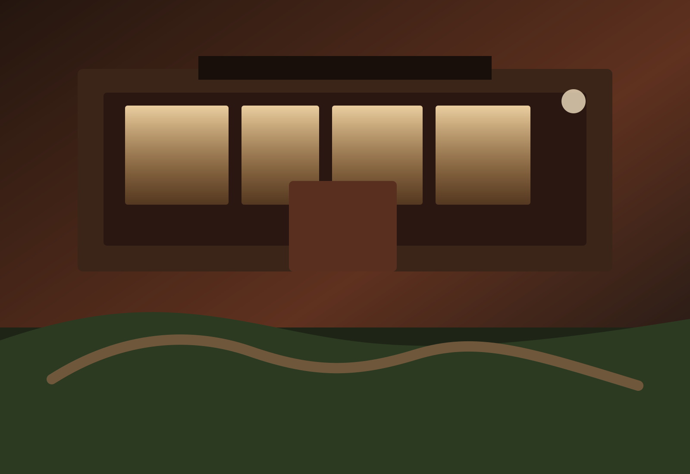
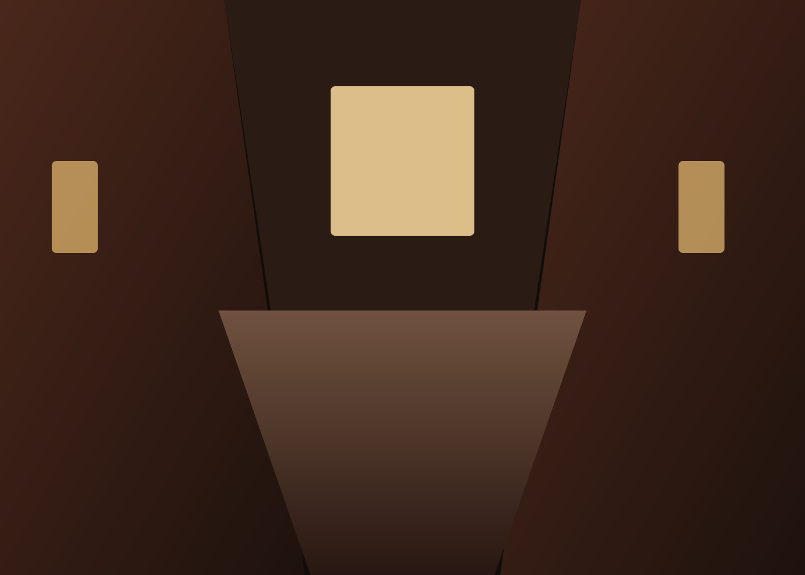

山吹
庭に面した和室十畳。障子越しの朝の光を楽しみたいご夫婦や、お籠もり滞在に。

季節便り
春は若葉と山桜、夏は深い緑と夕立、秋は紅葉、冬は雪見障子。どの季節にも、料理人と湯守、客室係が少しずつ手を入れ、その時々の心地よさを整えています。
宿の物語

山灯りの宿 いろはは、炭問屋の離れとして始まりました。客人を迎えるための座敷と湯小屋から少しずつ形を整え、今では全十二室の宿として、変わらぬ静けさを守り続けています。
館内は磨き込まれた木と和紙、庭石の陰影を基調に、控えめな華やぎを添える設え。お迎えからお見送りまで、必要以上に立ち入らず、それでいて寂しくない距離感を大切にしています。
客室
庭に面した和室十畳。障子越しの朝の光を楽しみたいご夫婦や、お籠もり滞在に。
半露天風呂と広縁を備えた和洋室。窓辺で読書をしながら、長めの滞在を楽しむ方向け。
二間続きの特別室。三世代の家族旅行や、記念日を静かに祝いたい日にふさわしい一室です。
四季の風景
山桜が庭に淡く映り、夕食には独活や筍が並びます。湯上がりに甘酒をご用意します。
青もみじと夕立の匂い。川床を思わせる涼やかな設えで、冷やし鉢をお楽しみください。
紅葉を望む広縁が人気の季節。茸と栗、川魚の塩焼きが主役になります。
雪見障子越しの白い庭。土鍋と根菜の滋味が身体を温め、湯のぬくもりが長く続きます。
お客様の声
館内のどこにいても音がやわらかく、久しぶりに本当に休めたと感じました。夕食の出し方も丁寧で、急かされることがありませんでした。
高齢の母との旅行でしたが、段差や食事の相談にも細やかに対応していただき安心でした。派手ではないのに、記憶に残る宿です。
ご予約
お電話 0570-18-1680 / 受付 9:00-19:00